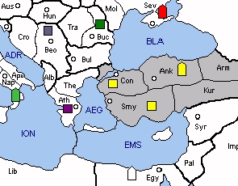

TURKEY (T) seems like a lonely place without Austria-Hungary. The Balkans are now inhabited by a squabbling mixture of minors, any two of which can deny occupation of Bulgaria. On the whole, Turkey doesn't have a lot of chances for rapid growth but at least it won't fall victim to an early blitz.
To the south, Syria is an available SC. However, nearby Egypt can challenge Turkish occupation by moving to the Eastern Mediterranean - also threatening Smyrna. Turkey must be concerned about British builds in Egypt and should encourage an anti-Italian stance by Britain. Up north, USSR and Turkey are still likely to bounce in the Black Sea, but Turkey can no longer immediately threaten Sevastopol by moving an army to Armenia on the first turn.
Czechoslovakia sits at the centre of the board, waiting patiently for the hordes of Turkish armies to come storming through the Balkans. Meanwhile, Army Prague wields enough influence to keep Turkey involved in everyone's plans. The ultimate goal of Czechslovakia should be to fuel a north-south war between Germany and Italy, thus leaving the Balkans to Turkey. With respect to Austria, Turkey should request German support for Czech occupation, but keeping Italy out is almost as good. However, if Germany and Italy are working together then consider supporting an early French assault on Munich.
|
 |
MINOR (Basic): Czechoslovakia SUGGESTED MINORS (Advanced): Egypt, Yugoslavia, Rumania POTENTIAL ALLIES: FRANCE versus Germany POLAND versus USSR |
Suggested Openings for Turkey:
Harem Hedgehog: |
A CON-BUL, A SMY-KUR, F ANK-BLA |
|
Assuming a bounce with USSR in the Black Sea and some assistance in the Balkans, Turkey will capture Bulgaria and possibly Syria. Otherwise, this opening probably won't surprise your neighbours too much. |
|
Sultans of Swing: |
A CON-THE, A SMY-KUR, F ANK-CON |
|
If Turkey and USSR agree on a Juggernaut, then Turkey can embark on an immediate Balkan offensive, ignoring Egyptian matters for the moment. Meanwhile, USSR will be free to move against Rumania. Be on the lookout for a Soviet stab, though. Otherwise, you may find yourself in dire straits. |
France and its Rumanian army offer some possibilities as an ally. Army Bucharest can harass USSR and ensure the capture of Bulgaria. However, unlike Germany’s Yugoslavian army, it won’t immediately hinder further advances westward through the Balkans. In exchange, France will probably expect help from Turkey's Czech army, possibly for an early assault against Munich. The next logical step could be an assault on Italy, with France grabbing the north and Turkey taking the south. If Poland and USSR are stalemated, then Turkey can contemplate further conquests in the Mediterranean. Alternatively, Turkey can head north and secure the eastern half of the board.
If immediate help is required against USSR, then Poland might be a better choice. However, Turkey will take time to mobilize its forces against USSR. Complications will also arise over the division of Soviet SCs, particularly over Moscow. Where possible, Turkey should encourage Poland to build a second fleet and seize control of Scandinavia, maintaining just enough armies to ensure the defeat of USSR. Meanwhile, Turkey should seize control of the Balkans and then consider its options. In the long term, Czechoslovakia provides a central position from which to produce units, but Poland will be concerned about Turkish builds in central Europe.
Turkey greatest threat is an Italian-USSR partnership. Turkey can nullify this threat by encouraging peace between Germany and Poland and war between Poland and USSR.